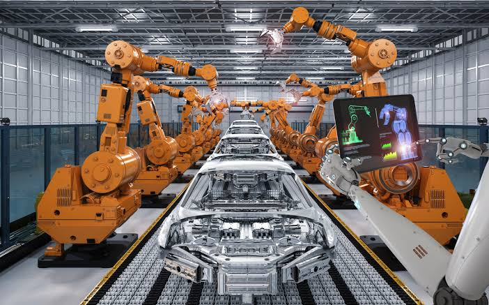
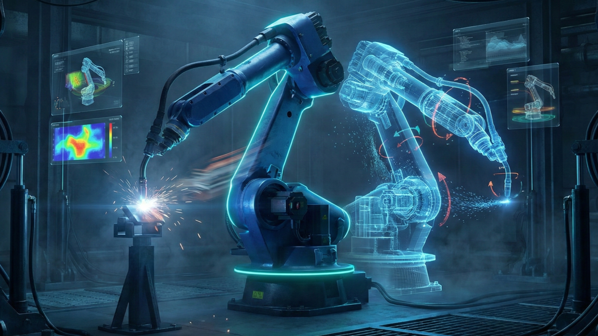
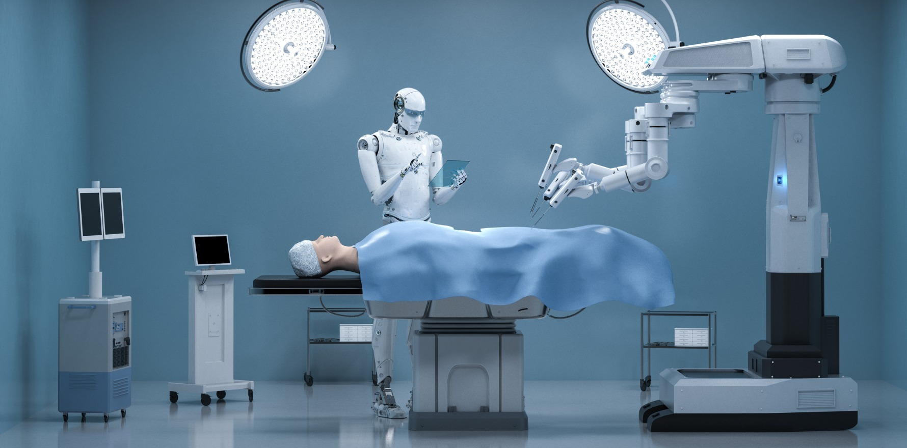
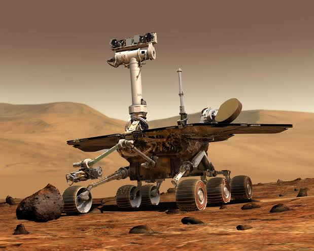
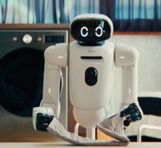
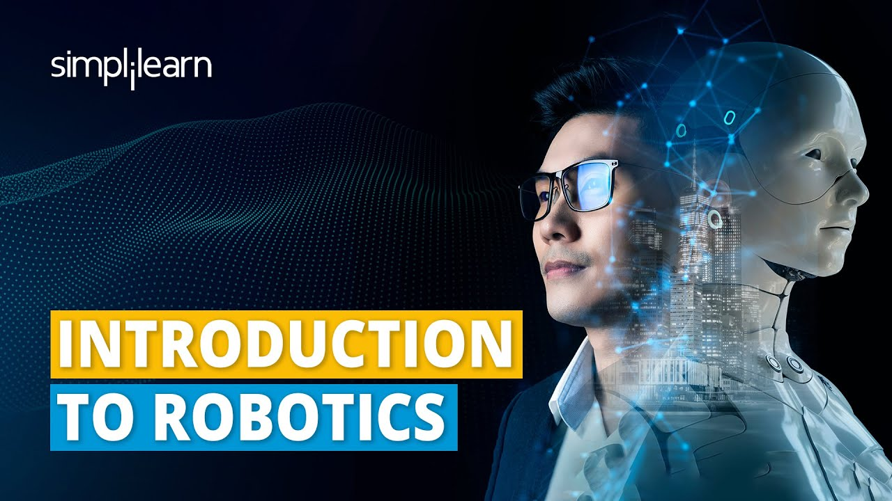
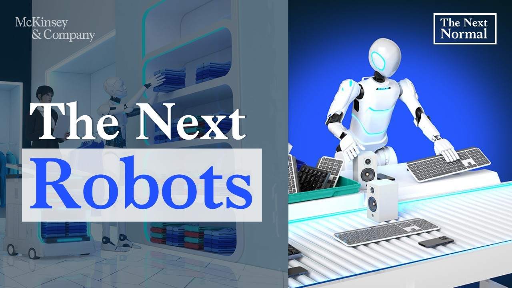

Manufacturing
Industrial robots assemble vehicles, package products, weld parts, and perform repetitive tasks with speed and precision.
Innovations Shaping Tomorrow

Robotics is the branch of technology that combines engineering, computer science, and artificial intelligence to create machines capable of performing tasks automatically. Robots help people work more efficiently, improve safety, and solve problems in industries ranging from healthcare to space exploration.
Explore RoboticsSensors allow robots to gather information from their environment, such as light, sound, temperature, distance, or movement.
Actuators convert electrical signals into physical movement, allowing robots to move wheels, arms, or grippers.
The control system acts as the robot's brain, processing sensor data and deciding how the robot should respond.
AI helps robots recognize objects, learn from experience, make decisions, and adapt to changing environments.

Industrial robots assemble vehicles, package products, weld parts, and perform repetitive tasks with speed and precision.

Robots assist surgeons during complex procedures, help patients with rehabilitation, and deliver supplies throughout hospitals.

Robots like Mars rovers explore distant planets, collect scientific data, and perform missions in environments too dangerous for humans.

Robot vacuum cleaners, lawn mowers, delivery robots, and customer-service robots make everyday tasks easier and more efficient.
The word "robot" first appeared in Karel Čapek's play R.U.R.
Unimate became the first industrial robot used in manufacturing.
NASA's Sojourner rover explored Mars.
The Roomba robotic vacuum was introduced to consumers.
AI-powered robots assist in medicine, logistics, education, and space exploration.
| Robots | Humans |
| Perform repetitive tasks with high precision | Think creatively and solve new problems |
| Work continuously without fatigue | Learn from experience and emotions |
| Excellent at dangerous environments | Better at social interaction and judgment |
| Follow programmed instructions | Adapt naturally to unexpected situations |
These videos provide an excellent introduction to robotics, explaining how robots work, where they are used, and how advances in artificial intelligence are shaping the future of automation.

